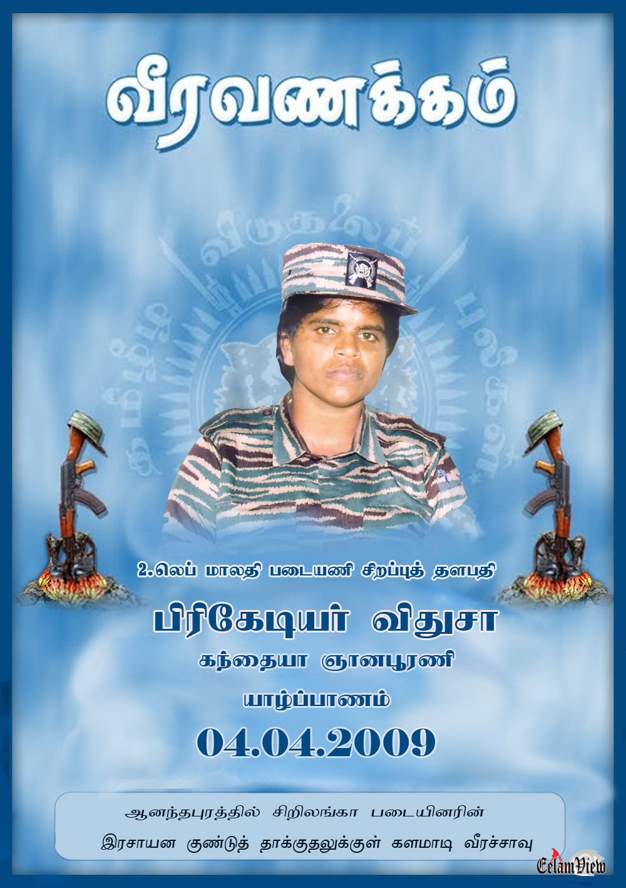

பிரிகேடியர் விதுஷா வீர வரலாறு

உண்மைப் பெயர்: சாவித்திரி நடராஜா
இயக்கப் பெயர்: பிரிகேடியர் விதுஷா / சுமதி
வீரச்சாவு தேதி: 05.04.2009
வீரச்சாவடைந்த இடம்: ஆனந்தபுரம், புதுக்குடியிருப்பு
பிறப்பிடம்: காரைநகர், யாழ்ப்பாணம்
வரலாற்றுக்குறிப்பு
தமிழீழ விடுதலைப் போராட்ட வரலாற்றில் மகளிர் படைப்பிரிவின் மூத்த உக்கிரத் தளபதிகளில் ஒருவரான பிரிகேடியர் விதுஷா, மாலதி படையணியின் சிறப்புத் தளபதியாக மிக நீண்ட காலம் பங்காற்றினார். ஓயாத அலைகள் சமர் உள்ளிட்ட பல வரலாற்று முக்கியத்துவம் வாய்ந்த போர்களில் மகளிர் படையணியை முன்னின்று வழிநடத்தினார். 2009 ஆனந்தபுரம் முற்றுகைச் சமரில் தீரமுடன் போரிட்டு மாவீரரானார்.